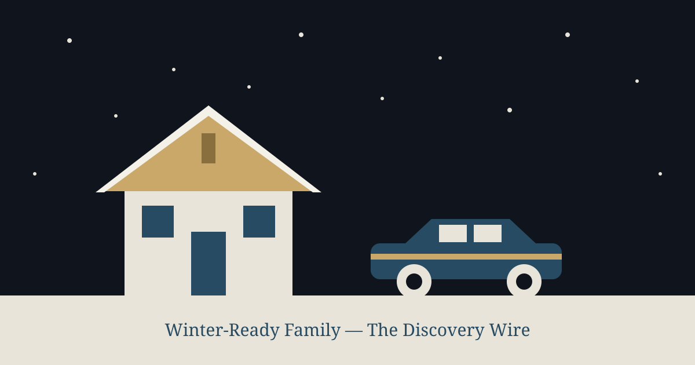

November 18, 2026 · 3 min read
One Bag, Two Kids: The Infant + Toddler Outing System That Doesn't Fall Apart

Illustration by The Discovery Wire
One Bag, Two Kids: The Infant + Toddler Outing System That Doesn't Fall Apart
As an Amazon Associate I earn from qualifying purchases. Some links on this page are affiliate links — if you buy through them, the site earns a small commission at no extra cost to you. Some products linked are our own. We only list gear we'd point family at, and prices change, so check the listing for the current number.
The jump from one kid to two breaks most diaper bags. Not because they are too small — because everything for two different-sized humans ends up in one undifferentiated pile, and the thing you need is always under the thing that just leaked. The fix is a system, not a bigger bag: pack by child, pack by event, and make restocking a two-minute job instead of a weekly archaeology dig.
The core idea: two kits inside one bag
Pack each child's supplies in its own packing cube or large zip pouch, in two different colors. Infant kit in one color, toddler kit in the other. In a parking lot, holding a baby, with a toddler announcing an emergency, you do not sort — you grab the right color.
Infant kit: diapers (one more than you think), wipes in a slim hard case, one full change of clothes in a zip bag, a burp cloth, formula or feeding supplies for one more feeding than the outing should take, and a spare pacifier if your baby uses one.
Toddler kit: diapers or pull-ups plus a change of underwear if potty training, a full change of clothes, a snack that cannot spill catastrophically (pouches and dry snacks, not yogurt tubes in a warm car), a filled water cup, and one small occupying thing — a sticker book outlasts most toys at a restaurant table.
→ Packing cubes, assorted colors
→ Reusable wet dry bags for diaper bag
The shared layer
Some things serve both kids and live outside the color kits: a changing pad (the foldable kind that wipes clean), a plastic bag roll for the truly destroyed items, sunscreen in season, a basic first-aid mini-kit (bandages, infant pain reliever dosed by your pediatrician's guidance, thermometer), and an adult layer nobody packs until they learn the hard way — a spare shirt for the carrying adult. Blowouts do not respect whose clothes they reach.
A wet/dry bag earns its place here: wet clothes go in sealed, and the rest of the bag survives the trip home.
→ Foldable changing pad, wipeable
→ Travel first aid kit, compact
Choose the bag for the carry, not the look
Backpack-style bags win for two-kid outings for one reason: both hands free. One hand is for a toddler who bolts, the other is for an infant carrier, a door, or a coffee. Shoulder bags slide, crossbody bags swing into the toddler's head, and tote bags spill. Look for: backpack straps, at least one exterior pocket reachable without taking the bag off (phone, keys, the toddler's cup), a wipeable interior, and a structure that stands up on its own when set down — a bag that collapses is a bag you repack at every stop.
→ Diaper bag backpack, large capacity
Restocking is the actual system
The bag fails at home, not on the road. The rule that keeps it working: the bag gets restocked when you walk in, not when you are leaving. Used diapers out, count what is left, replace to the standard loadout, dirty clothes into the laundry and a clean set in. Two minutes at the door beats ten minutes of panic at the next departure — and a laminated loadout card in the front pocket means the other parent, a grandparent, or a babysitter restocks it exactly the same way.
Two kids fit in one bag fine. What does not fit is improvisation. Color kits, a shared layer, and a restock-on-arrival rule turn the diaper bag back into what it was with one kid: a thing you grab without thinking.
Source:
← Back to latest stories